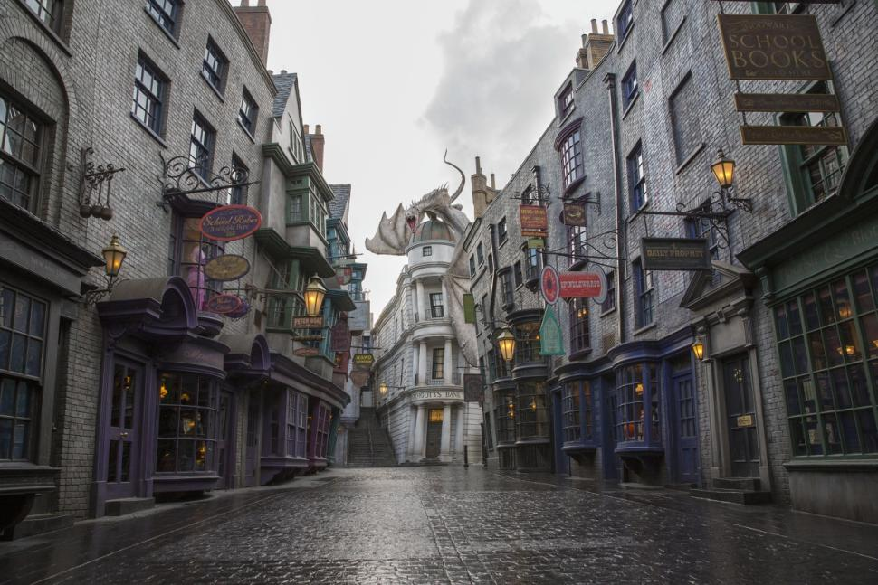
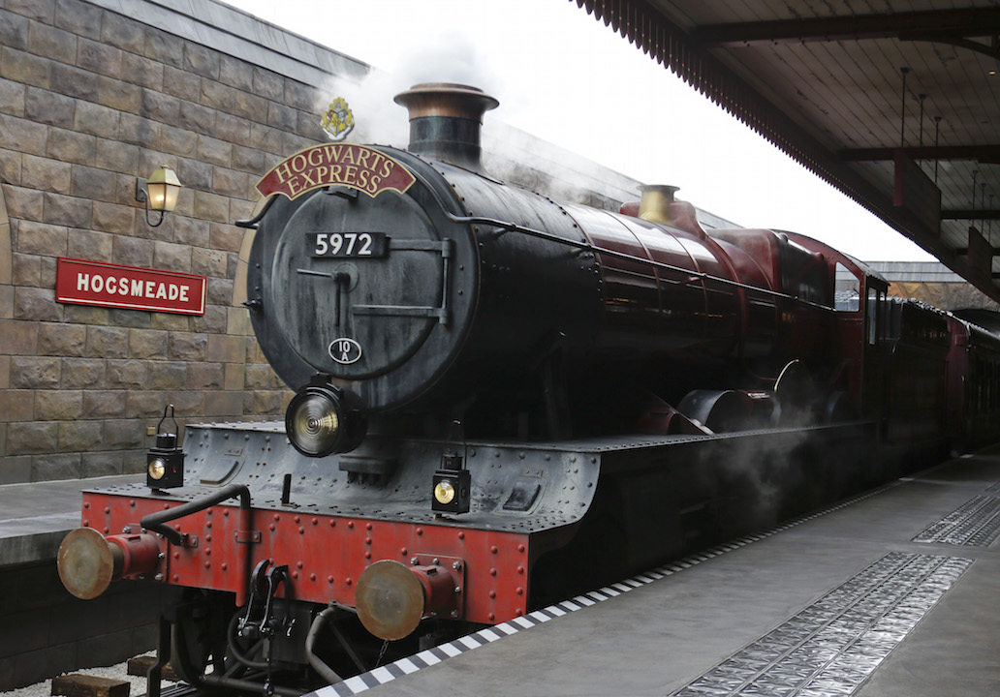
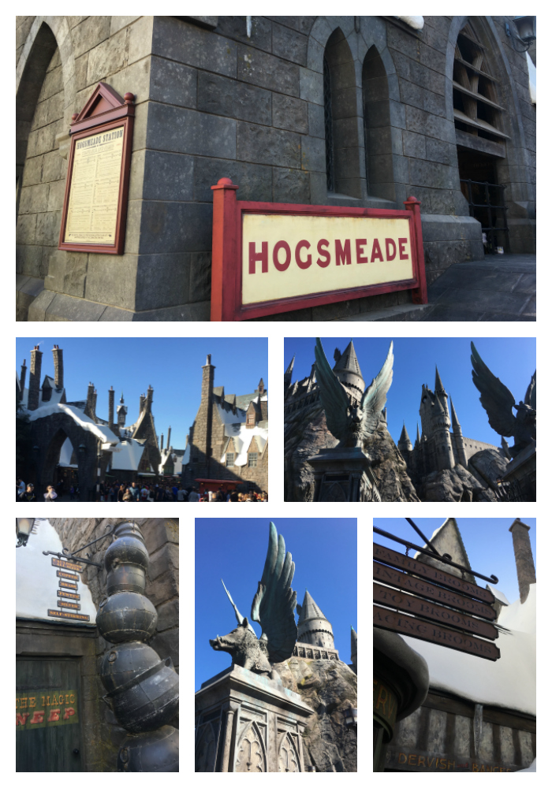
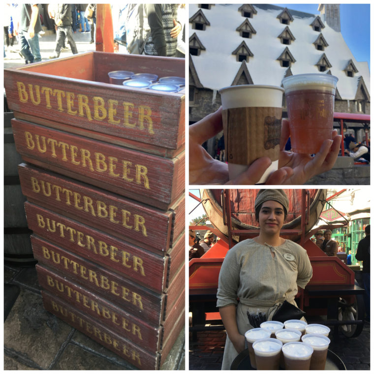
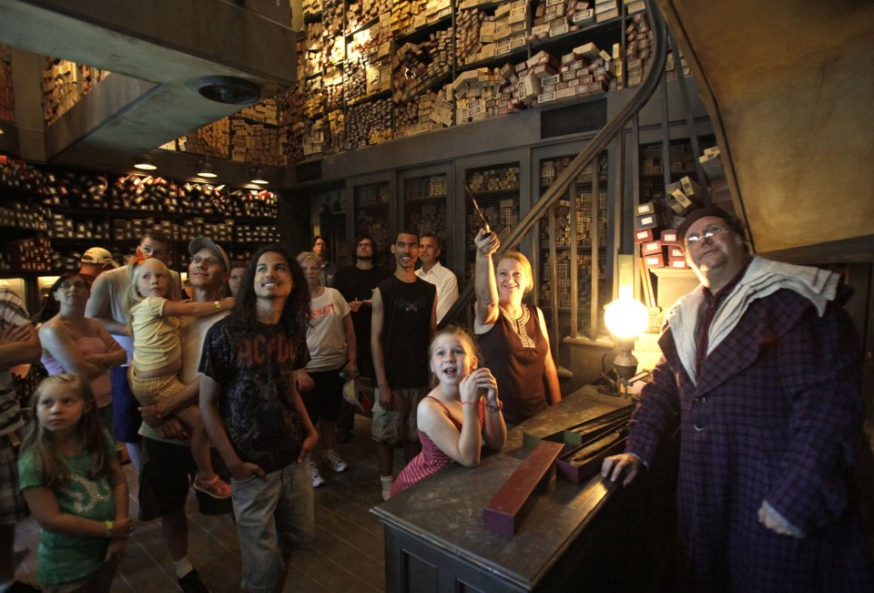

A Muggle's Day in the World of Harry Potter
For those of us that literally grew up with the characters in the books and movies, visiting The Wizarding World of Harry Potter is a dream come true.
I can't imagine a better first impression of the theme park than stepping foot into Diagon Alley for the first time. I was immediately struck by the significant amount of attention to detail they obviously put into creating this world. No sign, window, or brick was too small to have a magical touch.
The Hogwarts Express, as I'm sure you know, is the train that brings student wizards to Hogwarts school of Witchcraft and Wizardry. Students like Harry Potter, Ron Weasley and Hermione Granger were all transported by this train into our hearts and imaginations when we read the Harry Potter books, and at the Wizarding World of Harry Potter, you can experience the magic come to life.
The town of Hogsmeade is where wizarding students would go on weekends, and there was a magical candy store, a trick shop and of course, the Three Broomsticks – a pub which served up a wonderful concoction suitable for all called Butterbeer. Oh, butterbeer! Ever since I read the Harry Potter books, I've been wanting to try this magical beverage and finally I had a chance because they serve it here three ways: Cold, Frozen and Hot.
The design and décor at the Wizarding World is really beautiful and you feel like you're in a snow-capped mountain town, albeit one from a book. It's very fun to walk around and look at all the little touches they've added. There are several shops, including Honeydukes, the candy shop from the books, Ollivander's wand shop and of course a couple of gift shops. You can get dressed in costume and wave the wand to see some magic happen.
Speaking of wands, the Ollivander's Wand Experience was one of the highlights of the day. You're ushered into the wand shop and one lucky kid is picked from the crowd to get to choose a wand. Of course, as we all know from reading the books, the wand chooses the wizard and not the other way around, which becomes clear in the experience as well. It was delightfully done and we thought it was worth the wait for sure.